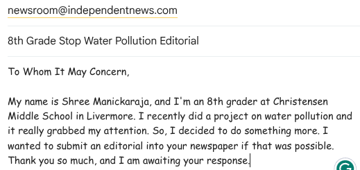

May 10, 2025
Finish writing/editing editorial

Stop Pollution, Start A Revolution
A water pollution reduction project(By Zero2Hero)There is so much hiding behind the scenes of water pollution that industry leaders want to hide from you. Though these companies have to keep factories running to make money, this pollution has to be slowed down.
According to the Federal Water Quality Control Board, “Every day, more than 1.5 million people per state with a population over 5 million in the United States go to bed every night without clean drinking water.” This is a big problem, yet it is currently being ignored.
The organizations that are working hard to stop this problem are also being ignored.
I care because as I was studying for a test, I saw an article pop up on my computer about water pollution. In curiosity, I clicked it. The stats about how many people go without clean drinking water astounded me. I wanted to make a difference.
My name is Shree M., and I'm a 14 year old in 8th grader, currently residing in the Bay Area. I love to make websites and make an impact. So this was the perfect project for me.
Stormwater management systems aim to capture and treat runoff before it reaches streams, rivers, and lakes.
These systems can include rain gardens, permeable pavements, and detention basins. According to Linquip, these systems help prevent pollution and manage urban flooding. It is currently working in other places.
Our team is planning to use this solution, however, we want to see if we can treat it at the source, instead of treating it right before it runs off. This is because we want to capture the source and clean that spot up as much as possible to prevent future pollution.
When it’s working well: the water is cleaner, safer, and ecosystems start to recover.
Our mission is to build a movement. Through awareness, education, and direct action, we want to get people to know more about the problem, support clean water legislation, and use better technology to stop water pollution. To do this,
SMARTWater aims to create community-driven clean water projects. With an unlimited budget and no time constraints, we bet we, as a community, could make a major difference by petitioning for stormwater runoff treatment. But, before this, to get awareness, we need your help to tell your friends about this project. We will then share our idea with other water pollution organizations to get the funding to create a proper stormwater treatment system.
Finish writing/editing editorial
Try to get a response back from at least one local newspaper
Start planning water cleanup
Tentative date for water cleanup
Share idea with other water pollution organizations
Requesting funding for stormwater management and treatment system installation
First steps are always important. So, the SMARTWater team has come up with the idea of creating an article. Before being able to petition and create the stormwater management system, we first have to gain interest in the idea. As a result, we built this webpage and are thinking of submitting an editorial to all local newspapers. Want to learn more about the editorial? Here is the link to it: Water Pollution: What Researchers Aren’t Telling You
Whether organizations like us decide to take a move against water pollution or not, you must be willing to take action no matter what. Bad water affects you just as much as it affects us. So please, step up, do your part, so all the future generations can have a better life. It's not just about the future, it's about restoring the past and restoring nature. We need to bring out the beauty of Mother Nature, which is impossible with dirty water at every turn. Good luck, and let's make a difference!